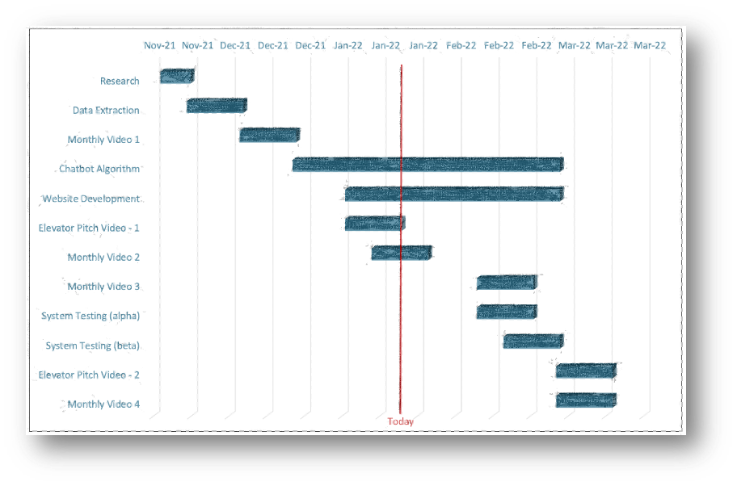

The Chatbot
HeartBot is an interactive web application that allows users to query the British Heart Foundation (BHF)'s compendium. It was developed by a team of Computer Science students from University College London (UCL) and is there to save researchers, staff, and policymakers time and effort. To see Team 20's development journey click here.
Abstract
The Problem: Looking through piles of Excel Sheets, searching for information is a tiring and cumbersome process. BHF Website users (predominantly researchers and policymakers) are often in the search of a single statistic, but in order to find it, they have to scroll through large bits of the BHF compendium, before they find what they're looking for. Currently, the only alternative to browsing hundreds of tabular data is to ask the British Heart Foundation's support team for help. That slows down the work process for users and creates more hassle for BHF's staff.
Our Solution: HeartBot is an innovative solution to that problem as it implements a complex two-step algorithm that classifies a question as either an FAQ or a retrieval-based query. If it's an FAQ then it simply gives the correct answer referring to an integrated set of FAQ answers. If the query is based on retrieval, it filters out the most appropriate sections of the BHF compendium and shows them to the user in tabular form. The bot works quickly and is simple and intuitive to use. It is flexible and future-proof because it allows BHF staff to add more data on-demand, as well as synonyms to commonly abbreviated or misspelled words.
Achievement & Impact: Ultimately, our goal for this project is to provide a working key statistics chatbot that the BHF can integrate into their website, in order to ease access to information. Our code is open-source and ready for future development. Since other solutions are not as simple, maintainable, and flexible as HeartBot, it has the advantage of being easily adaptable. That being said, the chatbot can be easily modified for usage in other projects and industries to make the working process more time-efficient and cost-effective.
Key Features
FAQs
HeartBOT is able to quickly distinguish if your question is an FAQ and answer it.
Data Retrieval
HeartBOT filters BHF's compendium based on your query and gives a table of results that's relevant to you.
Chatbot Website
HeartBOT is a web application, it can be integrated into any website.
Intro Video
A short introduction of HeartBOT and what to expect from this friendly chatbot.


Project Timeline
A Gantt Chart, visualising our progress.
